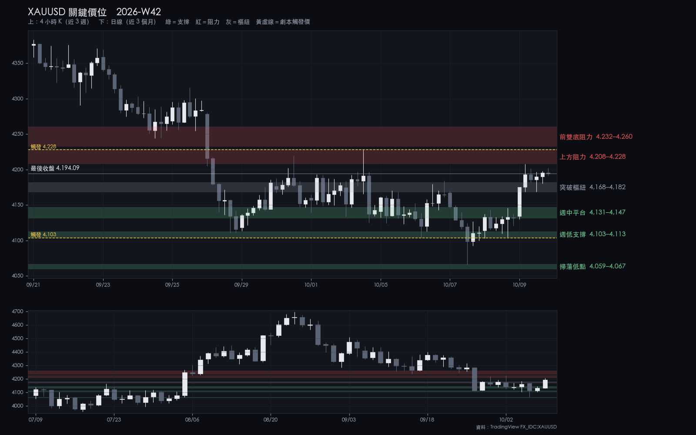
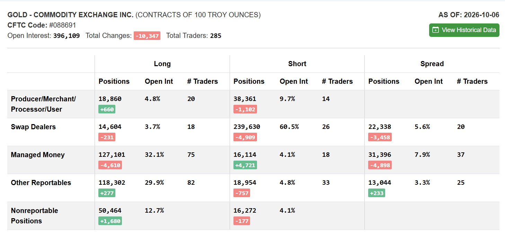

2026-W42 · Sun · 信心 medium 單一來源
XAUUSD 2026-W42 週報
週三掃到 4067 後收回，週五大漲收 4194；短線轉強，但仍在 4228 阻力與日線均線之下。
本週建議 觀望：4h 站上 4228 才追多，回踩 4131–4147 看 S2
資料截止：2026-10-09T20:30:00+00:00
關鍵價位

| 4,232.05–4,260.46 | 阻力 | 前雙底阻力 | 站上 4228 後的第一目標，先看反應 |
|---|---|---|---|
| 4,207.54–4,227.85 | 阻力 | 上方阻力 | 4h 收盤站上 4228 才算突破 |
| 4,167.90–4,182.00 | 樞紐 | 突破樞紐 | 回踩守住維持偏多；收破轉回區間 |
| 4,130.85–4,147.24 | 支撐 | 週中平台 | S2 第一候選區 |
| 4,103.48–4,112.80 | 支撐 | 週低支撐 | 4h 收破 4103 轉向跌破劇本 |
| 4,059.31–4,066.58 | 支撐 | 掃蕩低點 | 跌破劇本的目標；跌破即弱勢延續 |
劇本
| 整理 | 45% | 在 4103–4228 之間來回，等 CPI | — |
|---|---|---|---|
| 偏多 | 30% | 4h 站上 4228 後上看 4232–4260 | 4,227.85 |
| 偏空 | 25% | 4h 收破 4103 後下看 4059–4067 | 4,103.48 |
本週看什麼
- 4208–4228 阻力：三次衝高都被壓回
- 10/14（三）20:30 CPI
- 4168–4182 突破樞紐守不守得住
S1／S2
| S1 V3.9 | wait | 不追：觸發點 4201 緊貼 4208–4228 阻力；站上 4228 後再看 |
|---|---|---|
| S2 V3.2 | wait | B 級：等 4131–4147 或 4103–4113 出現正式錘頭 |
事件
| 2026-10-14 20:30 | 美國 9 月 CPI（BLS；同時發布 Real Earnings） | POLICY 列舉事件：發布前必須評估是否平倉。CPI 在週三而非週五，「週五發布前一日 22:00 前平倉」的硬性規則不適用；（判斷）建議發布前 1 小時不新進場。 |
|---|---|---|
| 2026-10-14 22:00 | 美國企業設立統計（Census，9 月） | 低影響，列出以求完整。 |
| 2026-10-15 20:30 | 美國 9 月 PPI（BLS） | 非 POLICY 列舉的強制評估事件；（判斷）持倉者宜於發布前自行評估。 |
| 2026-10-15 20:30 | 美國 9 月零售銷售（Census） | 非 POLICY 列舉的強制評估事件，與 PPI 同一時刻；（判斷）持倉者宜於發布前自行評估。 |
| 2026-10-15 22:00 | 美國製造與貿易庫存及銷售（Census，8 月） | 低影響，列出以求完整。 |
| 2026-10-16 20:30 | 美國 9 月進出口物價（BLS） | 非 POLICY 列舉事件；週五發布，週末不持倉原則照常適用。 |
上週回顧
- 週三跌破 4103 掃到 4066.58，當天收回
- 週五單日漲 60 點，收在週高附近
- DXY 週收 102.23，美元續強但黃金仍收高
| 2026-W38 | 4,347.3 | 4,399.58 | 4,234.93 | 4,377.29 | +0.69% |
|---|---|---|---|---|---|
| 2026-W39 | 4,379 | 4,383.343 | 4,244.38 | 4,284.13 | -2.17% |
| 2026-W40 | 4,285.1 | 4,286.2 | 4,110.898 | 4,142.75 | -3.32% |
| 2026-W41 | 4,136.5 | 4,207.54 | 4,066.58 | 4,194.145 | +1.39% |
CFTC
大戶淨多連六週下降、散戶淨多增加。研究參考：這種組合之後 4 週平均略偏強（未通過校正），不當訊號。
持倉反映的是建立它的那一週，不能預測下一週；看研究結論 →
CFTC 原始截圖（2026-10-06）

展開看細節：價位依據、劇本完整條件、市場摘要、證據限制
市場摘要
W41 收 4194.145，週開 4136.50，開收 +1.39%（對 W40 週收 +1.24%），收在週區間 90.5% 處。週三一度跌破 4103–4113 的週低支撐、掃到 4066.58，當日收回；週五單日上漲 60.28 點。短週期（30m／1h／4h EMA50）轉強，但價格仍在 4h EMA200、1d EMA50 與 EMA200 之下。DXY 週收 102.232，為 2025-03-31 那週以來最高週收，黃金與美元同週上漲。
價位依據
| 前雙底阻力 | 4232.05–4260.46 | 實際成交價：W38 週低 4234.93、W39 週低 4244.38。帶寬 28.41 點，約 1.05 根 4h ATR（27.12）；兩個前週低與三條中長期均線疊在一起。W40 週一跌破後未曾回測，若回到這裡是第一次從下方測試。 |
|---|---|---|
| 上方阻力 | 4207.54–4227.85 | 實際成交價：W41 週高 4207.54（10-09）、W40 週五高 4227.85（10-02）。帶寬 20.31 點，約 0.75 根 4h ATR。三週來衝高 3 次（10-02、09-30 的 4219.29、10-09）都在 4228 之下收回，上緣是 4h 收盤的確認線。 |
| 突破樞紐 | 4167.90–4182.00 | 計算值：4h EMA50 4167.90、1h EMA200 4169.24。帶寬 14.10 點，約 0.52 根 4h ATR |
| 週中平台 | 4130.85–4147.24 | 實際成交價：週五日低 4130.85、週四日高 4146.02。帶寬 16.39 點，約 0.60 根 4h ATR。週一與週四的 4h 收盤多在 4117–4140，靠近帶下緣，是本週成交較密的位置。 |
| 週低支撐 | 4103.48–4112.80 | 實際成交價：週四日低 4103.48、週二日低 4104.238、W40 週低 4110.898、W40 週一日收 4112.80。帶寬 9.32 點，約 0.34 根 4h ATR。四個實際成交價重疊；週三曾 4h 收破（4098.19）但當日收回，屬已被掃過的支撐。 |
| 掃蕩低點 | 4059.31–4066.58 | 實際成交價：W41 週低 4066.58（10-07）。帶寬 7.27 點。週三的掃蕩低點正好落在日線布林下軌附近，跌破代表日線統計下緣失守。 |
劇本完整條件
| 整理 | 45% | 價格在週低支撐 4103.48–4112.80 與上方阻力 4207.54–4227.85 之間往復，沒有 4h 收盤跌破 4103.48 或站上 4227.85。（以 4h 收盤為確認是報告作者選定的判斷規則） | 4h 收盤跌破 4103.48，或 4h 收盤站上 4227.85。 | 區間內往復；上緣看 4207.54–4227.85 的反應，下緣看 4167.90–4182.00 與 4130.85–4147.24。 |
|---|---|---|---|---|
| 偏多 | 30% | 4h 收盤站上 4227.85（上方阻力帶上緣），回踩不破 4207.54（帶下緣）。 | 站上後 4h 收盤跌回 4207.54 之下。 | 第一目標 4232.05–4260.46（前雙底／均線阻力）；其上為 4282.10（W40 留下的看跌缺口上緣）。 |
| 偏空 | 25% | 4h 收盤跌破 4103.48（週四低點，週低支撐帶下緣），反抽無法收回 4112.80。 | 跌破後 4h 收盤重新站回 4130.85（週中平台下緣）之上。 | 第一目標 4059.31–4066.58（掃蕩低點／1d 布林下軌）；跌破後下一個可引用價位為 4019.16（2026-08-03 那週週低，實際成交價）。 |
轉折條件
4h 收盤跌破 4103.48 或站上 4227.85——任一發生即脫離區間劇本，屆時以 live 結構重新評估。
S1／S2 完整條件
| S1 V3.9 | 條件式，且要求 live 正式 V3.9 訊號。30m 布林上軌 4201.06 距最後收盤 6.98 點，觸發點緊貼上方阻力帶 4207.54–4227.85，觸發後到帶上緣約 27 點。條件式預評等級為「—」（不建議）；4h 站上 4228 之後的訊號才有延伸空間。S1 正在預註冊前測，觸及停損門檻即暫停推薦。 | 無預設。觸發時依當下正式規則與即時結構重算。 | 每筆固定風險上限（金額見密碼頁），且不超過總資金 0.75%；同時只持一個部位。 |
|---|---|---|---|
| S2 V3.2 | 等待價格回測 4130.85–4147.24 或 4103.48–4112.80 並出現正式 V3.2 錘頭訊號；報告作者建議 CPI 前後 1 小時不新進場、4h 收破 4103.48 後不在下方接刀（非策略規則）。條件式預評等級為 B。 | 無預設。依訊號 K 低點與當下波動計算。 | 每筆固定風險上限（金額見密碼頁），且不超過總資金 0.75%；同時只持一個部位。S2 不高於 S1；每週最多 2 次實際進場，週一重置。 |
CFTC 完整數字
本報告 CFTC 段落的原始判讀依據（AS OF 2026-10-06，週二持倉，不含週三的 4066.58 低點與週五上漲）。可對照本圖核對：未平倉 396,109（−10,347）；Managed Money 多 127,101（−4,610）、空 16,114（+4,721），淨多 110,987，連六週下降；散戶（Nonreportable）淨多 34,192（+1,857）；Swap Dealers 空單減少 4,909。以上僅作描述，不作方向訊號。Commitments of Traders 由 cftc.gov 免費公布，屬美國公有領域資料；本圖只含部位統計，不含任何帳戶、持倉或身分資訊。
證據限制
- 本期僅一份合格報告（另一 producer 暫停中），為單一來源；方向判斷沒有交叉檢驗。
- 本報告的覆核由同一個模型在無建構記憶的情況下執行，不是獨立檢驗：範圍僅限可比對的契約遵循，不涵蓋判斷。
- CFTC 部位僅作背景描述，不作方向訊號；研究總覽中相關的「研究方向」結論強度皆為 weak、未通過家族校正。原圖附於本頁供讀者核對。
- GVZ、10 年期公債殖利率、通膨預期與波動率指標的來源資料自 2026-06-18 起未更新，完整即時 Macro 判定為 unknown。
- 來源比較共 10 組：5 組 similar、5 組 review（XAUUSD 30m 端點落差、XAUUSD 4h 與 DXY 4h 數值差、兩個週線的既有歷史差異）。正式點位一律採人工匯出。
- 公開版本不揭露帳戶部位或交易日誌內容。
研究證據，非投資建議。所有 Entry／SL 皆為條件式，實際執行前必須以 live TradingView 重新確認訊號與價格；最終決定屬於帳戶擁有者。